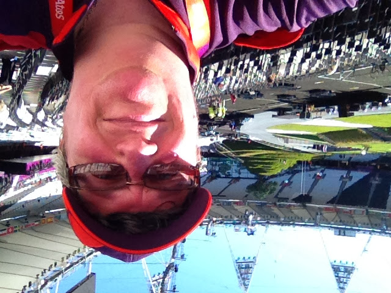
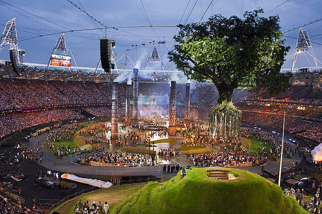

Shift Three Estate car Night shift after Opening Ceremony Rehearsal
Monday 23rd July 2012

Today was the day of one of the two Opening Ceremony rehearsals, directed by Danny Boyle, which we as Gamesmakers
had an opportunity to attend. I was actually on duty for both of those days, so I chose to go today as I could get away after seeing part of
it and do my night shift. It was a really hot sunny day with not a
cloud in the sky. I made sure I arrived in plenty of time to avoid large crowds at
security and the stadium entrance. When I got into the stadium, there was a
green rural scene already in place. This scene included a model of
Glastonbury Tor, a model
village, a water wheel and maypoles, replete with live animals (sheep, sheepdogs,
geese, cows, and horses removed shortly before the ceremony began), and actors portraying working villagers, football, rugby and cricket
players. There were also people walking around carrying floating clouds. In front of each seat, was an
electronic light thing that could be picked up and waved.
As the time for the ceremony to start approached (20.12), Danny Boyle himself made an announcement to the very expectant audience, telling us that
some bits of the ceremony would not be shown, especially some videos, but that anything we did see had to be kept a secret. We all promised
to say nothing, and fair play, nothing from either rehearsal leaked out.

This Green and Pleasant Land section, following the arrival of Kenneth Branagh as Isambard Kingdom Brunel, morphed into the Pandemonium
section where the Industrial Revolution took over. 2,500 volunters basically manually completed the scene change, including the erection of
seven smoking chimney stacks. The rhythmical drumming coming from the speakers was amplified for those in the seats, by live drummers, led by
Evelyn Glennie, who appeared from behind us and stood in all the aisles, playing recycled material drums. Whilst all this was happening,
floats appeared and moved around the stadium, including a model of the Empire Windrush, the Beatles in Sgt. Pepper costumes and Yellow Submarines,
Suffragettes, and Pearly Kings and Queen's. The industrial workers had been working away casting an iron ring. Four glowing orange rings appeared high
above the stadium and moved toward its centre on overhead wires. The ring from the arena lifted up towards them and when the rings formed
the Olympic symbol above the stadium, they ignited and rained fire in silver and
gold fireworkds. It was an awesome surround sound and vision experience, one I've never experience before or since.
The next bit was supposed to be the Queen arriving in the Royal Box. It was proceeded by a helicopter hovering over the stadium. I made a
quip to my neighbour, that perhaps the Queen was going to abseil into the stadium. Little did I know how close I was to the truth! We then
had the celebration of the NHS and Great Ormond Street Hospital, plus children's literature, complete with flying Mary Poppins from the
stadium roof. I left for my shift start as what, on the night, turned out to be Rowan Atkinson playing Chariots of Fire on the piano.
I spent most of my shift sitting around the FDO, until the Control room staff needed lifts home, and lifts in. I visited Hoxton, Newbury Park
Tube, Peckham, Sydenham then Leyton. Not the loveliest areas of London. I was advised not to leave my vehicle. I'm pretty sure they were
more worried about the safety of the BMW, rather than me.